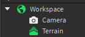
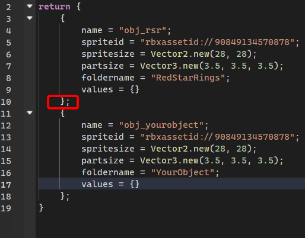

First, open a new place file, and empty the Workspace.

Then, go to your PLUGINS tab and click on Toggle Mercury GUI.
Unlike CSEdit, Mercury uses a bunch of windows for everything, so make sure you have them enabled.
On "Mercury - Main", click "Load Template". This will place the correct mod structure inside of game.ReplicatedStorage.
This template contains a level template as well. You can delete it if you want your mod to only use scripts, but for this tutorial, we need it.
Take the template out to Workspace to edit it. Make sure NO OTHER Folders exist in Workspace, as it will confuse Mercury.
From there on, you can change level settings in Level.Configuration (TODO:: create music list), and place Objects using "Mercury - Objects".
Once you highlight an object, you can view it's properties in the same "Mercury - Objects" window (Click on "Selected Object Properties" if they don't appear.)
Once you're done, drag the level back to "game.ReplicatedStorage.Mod.Maps", and click "Export Mod" in "Mercury - Main".
You can then load this mod via the "MODS" tab in-game.
Note: Exporting does not result in a 1:1 version of your level. Currently it only saves parts on the root of Collision, Layer0 and Layer1.
Anything else, including parts inside of parts, does not get exported. Additionally only Position, Size, Orientation, Shape, Color, Transparency and CanCollide get saved.
No decals, textures, or PointLights are supported at this time. Unions are also, and most likely never will be supported. No MeshParts either right now.
To define custom objects, go to "Mod.EditorDefinitions", and copy the existing Red Star Ring code, MAKING SURE TO KEEP THE ; AFTER THE }

After this, make sure to click "Update object definitions".
you'll need to load the object via the addObject() function, as well as define any custom behaviour.
You can use the "RedStarRing" script in "Mod.Scripts" for reference.